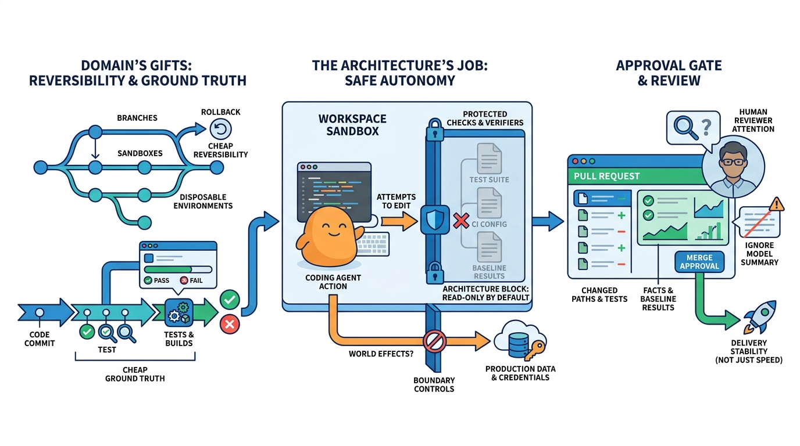

Part XI — DOMAINS: How Requirements Change Across Domains
Coding Agents: CLIs, Harnesses and the Developer Loop
AI-assisted: written with Claude Code, images generated with the Gemini API. How this works

Image generated by Google Gemini (gemini-3-pro-image-preview)